魔法
- 本頁依遊戲參數（版本 1.03.5）列出武器搭載的魔法：每個章節是一個系別，章首列出相關遺物詞條；只以「魔法」類型為條件的詞條列在「魔法類型相關詞條」，不在各章重複。系別名稱摘自遊戲內遺物詞條名稱，例如由「強化卡利亞劍的魔法」取「卡利亞劍」。武器與禱告見武器與禱告頁。
- 「相關遺物詞條」列出已由遊戲參數建立關聯的詞條。符合只表示存在參數關聯，不表示詞條對每一項都直接生效；作用方式與限制見詞條。沒有列出不表示沒有關係。只針對個別法術的詞條列在該法術名稱下方。
- 「FP 消耗」「耐力消耗」是遊戲參數的原始值，尚未套用遺物等減少消耗的效果。有蓄力消耗參數時，第二行列出「蓄力參數」的原值。此欄不判定法術是否支援蓄力；0 不代表實際不消耗，兩行也不可直接相加。持續施放的消耗不列出。
- 法術搭載在手杖或聖印記上。「搭載法器」欄列出具名的法器與搭載的槽位（R1、R2）；沒有名稱的法器變體依槽位只列出數量。
- 類型無法核實的法術引用列在武器頁的查證限制。
- 武器與法術名稱引用《艾爾登法環》本篇的遊戲文字，尚未確認與《黑夜君臨》一致；圖示取自 Eldenpedia。
魔法類型相關詞條
相關遺物詞條（依參數關聯）：強化魔法、減少 FP 消耗、【學者】對自己使用技藝時，能減少消耗的 FP
挖石
相關遺物詞條（依參數關聯）：強化挖石的魔法
| 法術 | FP 消耗 | 耐力消耗 | 搭載法器 |
|---|---|---|---|
| 爆碎岩盤Shatter Earth | 10 | 22 | 挖石杖（R1）未具名變體（R1）×1未具名變體（R2）×1 |
| 爆破岩盤Rock Blaster | 22蓄力參數 5 | 35蓄力參數 0 | 未具名變體（R2）×1 |
卡利亞劍
相關遺物詞條（依參數關聯）：強化卡利亞劍的魔法
| 法術 | FP 消耗 | 耐力消耗 | 搭載法器 |
|---|---|---|---|
| 卡利亞大劍Carian Greatsword相關遺物詞條（依參數關聯）：出擊時，武器魔法改為「卡利亞大劍」※僅限能使用的武器類別 | 12 | 22 | 未具名變體（R2）×1 |
| 亞杜拉的月光劍Adula's Moonblade | 22 | 22 | 未具名變體（R2）×1 |
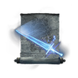 卡利亞迅劍Carian Slicer | 4 | 12 | 卡利亞輝石杖（R1）未具名變體（R1）×1未具名變體（R2）×1 |
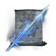 卡利亞貫刺Carian Piercer | 17蓄力參數 17 | 25蓄力參數 33 | 未具名變體（R2）×1 |
輝劍
相關遺物詞條（依參數關聯）：強化輝劍的魔法
| 法術 | FP 消耗 | 耐力消耗 | 搭載法器 |
|---|---|---|---|
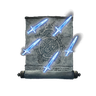 輝劍圓陣Glintblade Phalanx | 18 | 12 | 未具名變體（R2）×3 |
| 卡利亞圓陣Carian Phalanx | 24 | 16 | 未具名變體（R2）×1 |
| 巨劍陣Greatblade Phalanx | 30 | 20 | 未具名變體（R2）×1 |
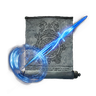 魔法輝劍Magic Glintblade相關遺物詞條（依參數關聯）：出擊時，武器魔法改為「魔法輝劍」※僅限能使用的武器類別 | 12蓄力參數 12 | 22蓄力參數 29 | 卡利亞輝劍杖（R1）未具名變體（R1）×1未具名變體（R2）×1 |
| 卡利亞式奉還Carian Retaliation | 8 | 15 | 未具名變體（R2）×1 |
隱形
相關遺物詞條（依參數關聯）：強化隱形的魔法
| 法術 | FP 消耗 | 耐力消耗 | 搭載法器 |
|---|---|---|---|
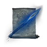 黑夜魔礫Night Shard相關遺物詞條（依參數關聯）：出擊時，武器魔法改為「黑夜魔礫」※僅限能使用的武器類別 | 7 | 9 | 未具名變體（R2）×1 |
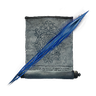 黑夜彗星Night Comet | 21蓄力參數 21 | 30蓄力參數 39 | 喪失杖（R1）未具名變體（R1）×3未具名變體（R2）×1 |
結晶人
相關遺物詞條（依參數關聯）：強化結晶人的魔法
| 法術 | FP 消耗 | 耐力消耗 | 搭載法器 |
|---|---|---|---|
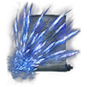 爆散結晶Shattering Crystal | 27蓄力參數 38 | 35蓄力參數 46 | 結晶杖（R1）未具名變體（R1）×2未具名變體（R2）×1 |
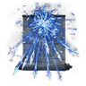 飛散結晶Crystal Release | 34 | 26 | 腐敗結晶杖（R1）未具名變體（R2）×1 |
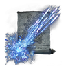 奔放結晶Crystal Torrent | 20蓄力參數 5 | 30蓄力參數 0 | 未具名變體（R2）×1 |
重力
相關遺物詞條（依參數關聯）：強化重力的魔法
| 法術 | FP 消耗 | 耐力消耗 | 搭載法器 |
|---|---|---|---|
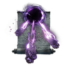 隕石Meteorite | 30蓄力參數 10 | 35蓄力參數 0 | 未具名變體（R2）×1 |
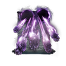 艾絲緹隕石Meteorite of Astel | 60蓄力參數 12 | 40蓄力參數 0 | 未具名變體（R2）×1 |
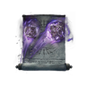 岩石球Rock Sling | 18 | 29 | 未具名變體（R2）×1 |
| 重力球Gravity Well | 12蓄力參數 12 | 20蓄力參數 26 | 隕石杖（R1）未具名變體（R1）×1未具名變體（R2）×1 |
| 碎星Collapsing Stars | 18蓄力參數 18 | 27蓄力參數 35 | 未具名變體（R2）×1 |
荊棘
相關遺物詞條（依參數關聯）：強化荊棘的魔法
| 法術 | FP 消耗 | 耐力消耗 | 搭載法器 |
|---|---|---|---|
| 罪惡荊棘Briars of Sin | 6 | 26 | 未具名變體（R2）×2 |
| 責罰荊棘Briars of Punishment相關遺物詞條（依參數關聯）：出擊時，武器魔法改為「責罰荊棘」※僅限能使用的武器類別 | 9 | 22 | 罪人杖（R1）未具名變體（R1）×1未具名變體（R2）×1 |
無已定義系別
本次建模範圍內無符合詞條
| 法術 | FP 消耗 | 耐力消耗 | 搭載法器 |
|---|---|---|---|
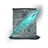 輝石魔礫Glintstone Pebble | 7 | 20 | 觀星杖（R1）輝石杖（R1）學院輝石杖（R1）亞人女王杖（R1）白金杖（R1）未具名變體（R1）×96未具名變體（R1、R2）×1 |
| 輝石大魔礫Great Glintstone Shard | 12 | 26 | 未具名變體（R2）×1 |
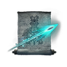 輝石迅魔礫Swift Glintstone Shard | 5 | 9 | 未具名變體（R2）×1 |
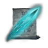 輝石彗星Glintstone Cometshard | 17蓄力參數 17 | 30蓄力參數 39 | 未具名變體（R2）×1 |
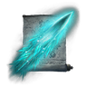 帚星Comet | 24蓄力參數 24 | 35蓄力參數 46 | 未具名變體（R2）×2 |
| 旋飛魔礫Shard Spiral | 14蓄力參數 14 | 28蓄力參數 36 | 未具名變體（R2）×1 |
| 輝石流星Glintstone Stars | 12蓄力參數 12 | 21蓄力參數 27 | 未具名變體（R2）×2 |
| 流星雨Star Shower | 23蓄力參數 23 | 26蓄力參數 34 | 未具名變體（R2）×1 |
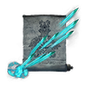 結晶連彈Crystal Barrage | 14蓄力參數 2 | 26蓄力參數 0 | 未具名變體（R2）×1 |
| 輝石彎弧Glintstone Arc | 9 | 18 | 觀星杖（R2）輝石杖（R2）學院輝石杖（R2）挖石杖（R2）亞人女王杖（R2）卡利亞輝石杖（R2）卡利亞輝劍杖（R2）白金杖（R2）喪失杖（R2）格密爾輝石杖（R2）結晶杖（R2）腐敗結晶杖（R2）罪人杖（R2）亞茲勒的輝石杖（R2）盧瑟特的輝石杖（R2）隕石杖（R2）死王子杖（R2）卡利亞權杖（R2）未具名變體（R2）×21 |
| 海摩砲彈Cannon of Haima | 38蓄力參數 38 | 42蓄力參數 55 | 未具名變體（R2）×1 |
| 結晶散射Crystal Burst | 14蓄力參數 14 | 9蓄力參數 12 | 未具名變體（R2）×1 |
| 海摩大槌Gavel of Haima | 22 | 46 | 未具名變體（R2）×1 |
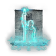 魔法之境Terra Magica | 20 | 12 | 未具名變體（R2）×1 |
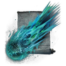 彗星亞茲勒Comet Azur | 40蓄力參數 10 | 34蓄力參數 0 | 亞茲勒的輝石杖（R1）未具名變體（R1）×1未具名變體（R2）×1 |
| 創星雨Founding Rain of Stars | 27蓄力參數 32 | 37蓄力參數 48 | 未具名變體（R2）×2 |
| 毀滅流星Stars of Ruin | 32蓄力參數 32 | 33蓄力參數 43 | 盧瑟特的輝石杖（R1）未具名變體（R1）×1未具名變體（R2）×1 |
| 蕾娜菈的滿月Rennala's Full Moon | 47 | 32 | 卡利亞權杖（R1）未具名變體（R1）×1未具名變體（R2）×1 |
| 菈妮的暗月Ranni's Dark Moon | 57 | 32 | 未具名變體（R2）×1 |
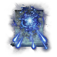 天降魔力Magic Downpour | 18蓄力參數 18 | 17蓄力參數 22 | 未具名變體（R2）×1 |
| 羅蕾塔的大弓Loretta's Greatbow | 24蓄力參數 24 | 30蓄力參數 39 | 未具名變體（R2）×1 |
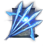 羅蕾塔的絕招Loretta's Mastery | 39蓄力參數 39 | 33蓄力參數 43 | 未具名變體（R2）×1 |
| 輝石冰塊Glintstone Icecrag | 12 | 26 | 未具名變體（R2）×1 |
| 薩米爾冰風暴Zamor Ice Storm | 17蓄力參數 17 | 27蓄力參數 35 | 未具名變體（R2）×1 |
| 冰霧Freezing Mist | 20蓄力參數 20 | 13蓄力參數 17 | 未具名變體（R2）×1 |
| 魔力武器Scholar's Armament | 25 | 10 | 未具名變體（R2）×1 |
| 魔力盾牌Scholar's Shield | 30 | 10 | 未具名變體（R2）×1 |
| 結冰武器Frozen Armament | 20 | 10 | 未具名變體（R2）×1 |
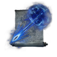 奇襲魔礫Ambush Shard | 13 | 15 | 未具名變體（R2）×2 |
| 托普斯的力場Thops's Barrier | 7 | 10 | 未具名變體（R2）×1 |
| 亙古黑暗Eternal Darkness | 25 | 15 | 未具名變體（R2）×2 |
| 熔岩球Magma Shot相關遺物詞條（依參數關聯）：出擊時，武器魔法改為「熔岩球」※僅限能使用的武器類別 | 16蓄力參數 16 | 21蓄力參數 27 | 格密爾輝石杖（R1）未具名變體（R1）×1未具名變體（R2）×1 |
| 格密爾之怒Gelmir's Fury | 16蓄力參數 3 | 38蓄力參數 0 | 未具名變體（R2）×1 |
| 滾燙熔岩Roiling Magma | 28蓄力參數 28 | 27蓄力參數 35 | 未具名變體（R2）×1 |
| 拉卡德的怨魂Rykard's Rancor | 23 | 36 | 未具名變體（R2）×1 |
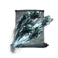 召喚怨魂Rancorcall | 12蓄力參數 12 | 21蓄力參數 27 | 死王子杖（R1）未具名變體（R1）×1未具名變體（R2）×1 |
| 古老死亡怨魂Ancient Death Rancor | 21蓄力參數 24 | 27蓄力參數 35 | 未具名變體（R2）×1 |
| 迸發靈火Explosive Ghostflame | 29 | 45 | 未具名變體（R2）×1 |
| 提比亞的喚聲Tibia's Summons | 17 | 27 | 未具名變體（R2）×1 |
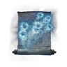 神諭泡泡Oracle Bubbles | 12蓄力參數 12 | 18蓄力參數 23 | 未具名變體（R2）×1 |
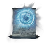 神諭大泡泡Great Oracular Bubble | 16蓄力參數 16 | 27蓄力參數 35 | 未具名變體（R2）×1 |
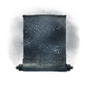 黑夜女巫煙霧Night Maiden's Mist | 20蓄力參數 20 | 20蓄力參數 26 | 未具名變體（R2）×1 |
| 未具名（ID 8000） | 0 | 15 | 未具名變體（R2）×1 |
| 未具名（ID 8001） | 0 | 15 | 未具名變體（R2）×1 |
| 未具名（ID 8002） | 0 | 15 | 未具名變體（R2）×1 |
| 未具名（ID 8003） | 0 | 15 | 未具名變體（R2）×1 |
| 未具名（ID 8010） | 0 | 25 | 未具名變體（R2）×1 |
| 未具名（ID 8011） | 0 | 25 | 未具名變體（R2）×1 |
| 未具名（ID 8012） | 0 | 25 | 未具名變體（R2）×1 |
| 未具名（ID 8013） | 0 | 25 | 未具名變體（R2）×1 |
| 未具名（ID 8014） | 0 | 25 | 未具名變體（R2）×1 |
| 未具名（ID 8015） | 0 | 25 | 未具名變體（R2）×1 |
| 未具名（ID 8020） | 0 | 35 | 未具名變體（R2）×1 |
| 未具名（ID 8021） | 0 | 35 | 未具名變體（R2）×1 |
| 未具名（ID 8022） | 0 | 35 | 未具名變體（R2）×1 |
| 未具名（ID 8023） | 0 | 35 | 未具名變體（R2）×1 |
查證限制
- 遊戲參數沒有名稱，也沒有可用的《黑夜君臨》法術文字，名稱一律引用《艾爾登法環》本篇文字；沒有本篇名稱的法術以 ID 顯示。
- 系別只建立遺物詞條指定為對象的系別；其餘參數分類不顯示，該法術列在「無已定義系別」。
- 同一法器的不同變體搭載的法術可能不同，各自保留，不合併。搭載法器清單不是出擊時替換法術的相容清單。
- 以下詞條與魔法有關，但參數尚不足以列舉對象，本頁暫不列出：
- 延長魔法、禱告的有效時間：有延長倍率，但沒有可確認適用法術的條件。
- 角色詞條中只有名稱或狀態線索者，例如【隱士】魔法之境。